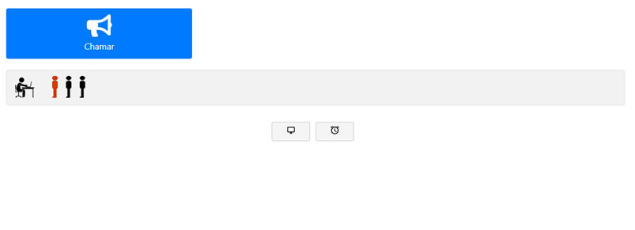

Painel de controle dinâmico e interativo
A dashboard conta com um verdadeiro arsenal de funcionalidades, desde o cadastro de novos clientes, até geração de senhas normais e de prioridades, filtradas por setor de atendimento. O sistema de gereciamento de filas é completo, com vários módulos e diversas funcionalidade incriveis que vão te ajudar a ter um controle persistente e mais organização nas filas de atendimento.

Fila de atendimento usando a tecnologia real time
A fila de atendimento é dinâmica e usa a funcionalidade real time, onde o usuário não precisa ficar atualizando a tela, é tudo feito automaticamente, onde o usuário só precisa focar em atender o cliente final, o painel conta com icones de clientes normal(preto) e de prioridade(vermelho) no formato de uma fila, trazendo o exemplo do mundo real mais proximo para o mundo computacional.
Painel de chamada de senhas com notificação sonora
O painel de chamadas de senhas conta com notificação sonora e pode ser personalizado de acordo com as necessidades do cliente(o desenvolvedor cria as novas funcionalidades de exibição no painel), as personalizações vão desde uma criação de slides até a exibição de vídeos controlados via javascript.
Atendimento prioritário em conformidade com a lei federal
O sistema de atendimento de prioridades é atualizado e segue as rigorosas leis adotadas nacionalmente em todo o Brasil, com isso as pessoas que tem prioridade na fila de espera, serão atendidas conforme o que está previsto na lei brasileira, o cidadão terá seu atendimento respeitado e no início da fila, evitando assim que haja "furos" na fila por parte de outras pessoas que não são de atendimento prioritário. Além disso, podem ser adicionados novos tipos de atendimentos prioritários conforme as necessidades da empresa.
Triagem com configuração personalizada
A triagem do painel de controle é personalizada, onde o usuário pode inserir novos textos, como também retirar dados indesejados, é mostrado uma tela de impressão ao lado, pois o sistema trabalha em conjunto com uma impressora térmica para impressão de senhas, o sistema também pode ser configurado para funcionar sem impressora térmica.
Painel de triagem moderno e configurável
A triagem pode ser configurada para exibir ou não senhas de atendimento, podem ser geradas senhas normais e de prioridade em conformidade com a lei nacional, a triagem é dividiva por serviços, onde cada serviço gera suas próprias senhas.
Visualização de gráficos e geração de relatórios para tomadas de decisão
O painel conta com visualizações de gráficos por status de atendimento, serviços e tempo médio de atendimento. Além disso, o painel trabalha com geração de relatórios por serviços executados, atendimentos concluídos, atendimentos em todos os status e por tempo médio de atendimento por atendente. Os relatórios podem ser gerados e depois impressos para futuras tomadas de decisão.
Tecnologias utilizadas
Para o desenvimento deste sistema foram utilizadas as seguintes tecnologias: PHP 7.0 com o gerenciador de dependências Composer, HTML5, CSS3 com enfase no flex-box e css animation keyframes usado no painel de exibição de senhas, javascript utilizando AJAX e recursos do Ecma Script 2015, 2016 e 2017, servidor web Apache, por fim, foi utilizado o padrão de arquitetura MVC(Model View Controller) adotado amplamente no mundo inteiro.
PHP 7
HTML5
CSS3
JS